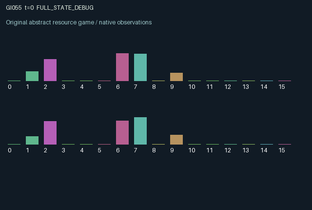

GI055 / LEGACY_ARRAY
astra-d2-00055: cross-pollination with delayed contagious cost
2 agents5 actions16 observation columns32 original horizonRuntime: PASS
Release verification episode
Untrained uniform legal actions. Actual JAX state sampled along the full original episode; full-state debug camera. No human performance or learning claim.

Run this game
crucibles play --game 55
Start Python locally, then open the address printed by the terminal. Installation, multiplayer, takeover and keyboard controls →
Objective, rewards & ending
Exact task contract
{
"termination": "Original kernel t >= 32; see mechanism and source"
}Declared per-step reward bounds: -1.0 to 1.0. Observability: source_defined.
Rules
Original mechanism document (historical status wording retained)
# astra-d2-00055: cross-pollination with delayed contagious cost This parentless source proposal combines generic mutualistic growth, staged production, common crowding, and infection externalities. The setting is a stylized transition system, not a calibrated biological model or an adaptation of an inspected benchmark. No parent source, experiment score, or feedback capsule was used. No claim is made about novelty, nonisomorphism, eligibility, compilation, or learning effectiveness. ## Actions and persistent transitions Each agent owns biomass, moisture, persistent flowers, fruit, soil quality, a seed bank, and blight. Incoming pollen and incoming spores are stored separately. Actions are 0 rest and sanitize, 1 sow from the seed bank, 2 irrigate, 3 create flowers and emit pollen, and 4 harvest existing fruit. All actions are legal and consume available quantities where applicable. Sowing converts seed stock to biomass and slightly depletes soil. Biomass also grows gradually according to soil, moisture, remaining growth capacity, and blight. Flowering spends some biomass, creates flowers, and sends pollen to the other plot's next state. That pollen can fertilize only the recipient's already existing flowers during the following transition. Fertilization creates persistent fruit, which is available for a later harvesting action. Unused flowers and fruit decay. Thus one plot cannot create productive fruit from its own emission alone: the other agent's flowering action supplies the cross-plot input. An unhealthy emitter also sends spores proportional to its current blight and emission. Those spores enter the partner's next state and increase blight on the following transition. Irrigation can induce local blight when moisture before evaporation exceeds the threshold. Rest sanitizes, replenishes seeds and soil, and helps retain moisture. Harvesting returns some seed stock and weakly reduces blight. Combined biomass above a shared threshold creates shade that suppresses both plots' future biomass. Each transition receives one shared rainfall draw from the explicit random key. ## Information and observation columns The 16 columns are: time/32; own biomass; own moisture; own flower stock; own incoming pollen; own fruit; own soil quality; own seed bank; own blight; other biomass; other flower stock; other fruit; other blight; own previous usable harvest; other previous usable harvest; other previous action/4. Other moisture, soil, and seed stock are private. Pending spores are not directly included in observations, though visible historical blight and actions can help infer transmission. Current stocks describe both immediate harvesting opportunities and the delayed pipeline of flowering, fertilization, and fruit. ## Incentives, delay, and reward bound Own usable harvest pays 0.80 per unit, and the partner's usable harvest contributes 0.12 per unit. Usability decreases with the harvesting plot's blight. Irrigation, sowing, and flowering incur small immediate costs; existing blight incurs an ongoing penalty. Flowering can benefit the other plot through pollination while carrying an infection risk; expanding biomass can increase own productive capacity while imposing bilateral shade. Rest may sacrifice a current harvest or flowering opportunity for future health and resources. The reward is the clipped sum of these bounded harvest benefits and costs, with `jnp.clip(..., -1.0, 1.0)` enforcing the declared range. Stock clipping represents stylized capacity and nonnegative-resource constraints rather than a claim of physical conservation. Coordination, recovery, and asymmetry are possible hypotheses; no learned response has been observed. ## Interface and evidence status The intended interface has two agents, 16 float32 observations per agent, five actions, and fixed-shape JAX array state. Scalar int32 time advances once per transition. Both done flags are true when next-state time reaches 32, and terminal state and observations are returned without resetting. Info supplies scalar `done_all` and a next-state bool legal mask. Source authoring and any syntax parsing are the only author-side evidence. Isolated validation, structural/trajectory review, mechanism qualification, and learning results remain separate and unestablished.
Commands
0Action 0; see mechanism and source
1Action 1; see mechanism and source
2Action 2; see mechanism and source
3Action 3; see mechanism and source
4Action 4; see mechanism and source
Roles & abilities
agent_0 Original legacy agent; see mechanism and source
agent_1 Original legacy agent; see mechanism and source
Observation permissions
Training receives only the original observation rows. Role cameras use declared visibility; debug cameras are explicitly marked. Local benchmark records log debug exposure and role takeover history.
Exact observation layout
[]
Entity visibility & attributes
[]
Actual verification & provenance
Per-game execution receipt
{
"game": "gi055",
"status": "PASS",
"verification_revision": 2,
"source_sha256": "90b08080e591797086950d9441aed1d0c0a3f85dae67090a3ed072abefb22e67",
"seed": 20261101,
"runtime": {
"jax": "0.4.38",
"numpy": "1.26.4",
"devices": [
"TFRT_CPU_0"
]
},
"dimensions": {
"num_agents": 2,
"observation_size": 16,
"num_actions": 5,
"max_steps": 32
},
"checks": {
"eager_reset": {
"status": "PASS",
"seconds": 0.6346559524536133
},
"observation_spaces_legal_masks": {
"status": "PASS",
"seconds": 0.17810940742492676
},
"eager_step": {
"status": "PASS",
"seconds": 0.5840499401092529
},
"jit_reset": {
"status": "PASS",
"seconds": 0.37795233726501465
},
"jit_step": {
"status": "PASS",
"seconds": 0.3811371326446533
},
"eager_jit_integer_parity_float_measurement": {
"status": "PASS",
"seconds": 0.0009829998016357422
},
"jit_vmap_reset": {
"status": "PASS",
"seconds": 0.4507429599761963
},
"jit_vmap_step": {
"status": "PASS",
"seconds": 0.37644147872924805
},
"outer_autoreset_api": {
"status": "PASS",
"seconds": 0.9234459400177002
},
"full_original_horizon_episode_and_render": {
"status": "PASS",
"seconds": 2.7714216709136963
}
},
"human_scores": null,
"browser_controls": "PENDING",
"failures": [],
"elapsed_seconds": 7.1960999965667725,
"float_parity_max_abs": 0.0,
"numerical_parity": "EXACT",
"raw_terminal_absorbing": "NOT_PART_OF_ORIGINAL_LEGACY_CONTRACT",
"terminal_outer_reset": "PASS",
"episode_steps": 32,
"scripted_random_returns": [
-0.6208988588186912,
-0.3120433782460168
],
"terminal": true,
"demo_information": "FULL_STATE_DEBUG",
"demo_frames": 33,
"render_roles_checked": 2
}Chromium control verification
{
"game": "gi055",
"status": "PASS",
"human_scores": null,
"engineering": true,
"checks": [
"catalog_selected_and_real_native_reset",
"dom_queue_and_native_step",
"second_participant_ownership_and_native_joint_step",
"all_roles_individually_controllable_no_role_cap",
"explicit_debug_camera",
"release_to_pure_ai_without_reset"
],
"seconds": 2.618021011352539
}Original identity and file hashes
{
"id": 55,
"key": "gi055",
"title": "astra-d2-00055: cross-pollination with delayed contagious cost",
"summary": "",
"tags": [],
"family": "legacy_array",
"dimensions": {
"num_agents": 2,
"observation_size": 16,
"num_actions": 5,
"max_steps": 32
},
"source_sha256": "90b08080e591797086950d9441aed1d0c0a3f85dae67090a3ed072abefb22e67",
"manifest_sha256": "9427953e905ac0bbf2c59b5e6448d9f888731fc84275a1ecf8beb8a8e7b51843",
"files": [
{
"file": "candidate.py",
"sha256": "90b08080e591797086950d9441aed1d0c0a3f85dae67090a3ed072abefb22e67",
"bytes": 4920,
"origin": "work/exp_2/astra_generation/discovery_v2/initial/candidate_00055/attempt_00/candidate.py"
},
{
"file": "mechanism.md",
"sha256": "485ccb10dd9ce72833b416feae12a30d2f61a9001d8509cbc1b675750253e23a",
"bytes": 4306,
"origin": "work/exp_2/astra_generation/discovery_v2/initial/candidate_00055/attempt_00/mechanism.md"
}
],
"original_status": "LEGACY_SOURCE",
"original_saved_replay": false,
"release_validation": "PASS",
"human_scores": null,
"browser_validation": "PASS"
}